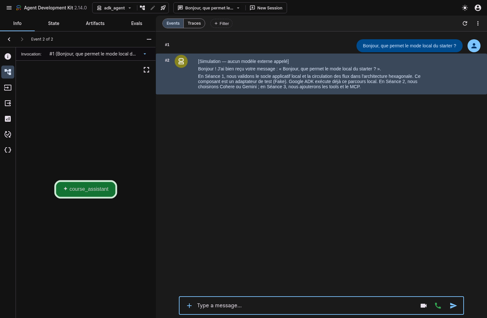

Brancher l’IA.
Garder le contrôle.
Un LLM derrière un port, puis un premier RAG capable de citer ses preuves et de s’abstenir.

À la fin, votre assistant sait répondre… ou dire qu’il ne sait pas.
Interchangeable
Fake et fournisseur live respectent le même contrat.
Sourcé
Chaque réponse montre le passage réellement récupéré.
Sans réseau
Les scénarios automatiques restent déterministes.
Préparez un corpus petit, propre et explicable.
Choisir 3 à 8 documents
Markdown ou texte, publics ou synthétiques, liés à votre domaine.
Donner des IDs stables
Une source doit rester identifiable après réindexation.
Écrire 4 questions
Deux répondables, une ambiguë et une hors corpus.
Bloqué sur les données ?
Utilisez temporairement tp/fixtures/music-library/corpus/. Ce jeu sert de secours, pas de sujet imposé.
Utilisez ADK derrière le port fourni.
Streamlit
Chat
Port
/ Gemini
Deux fournisseurs. Le même parcours fourni.
Cohere
FILROUGE_LLM_PROVIDER=cohere COHERE_MODEL=command-a-03-2025 COHERE_API_KEY=…
Gemini
FILROUGE_LLM_PROVIDER=gemini GEMINI_MODEL=gemini-2.5-flash GOOGLE_API_KEY=…
Choisir un profil dans votre .env local, puis redémarrer Streamlit. Le profil fake reste disponible sans clé, avec une simulation explicite.
uv run adk web . --host 127.0.0.1 --port 8001
Choisir adk_agent pour observer le parcours. Les concepts ADK seront étudiés en S3. Le backend d’embedding reste un choix distinct.
Transformez les documents en preuves recherchables.
id + version
texte borné
même modèle
upsert
Idempotence
Réindexer la même version ne crée pas de doublon.
Traçabilité
Chaque chunk garde son document, sa position et sa version.
Compatibilité
Un changement de modèle exige une réindexation explicite.
Recherchez d’abord. Générez ensuite.
Valider la question
Taille, vide, caractères et contexte autorisé.
Récupérer 1 à 3 passages
Seuil minimal et nombre de sources bornés.
Construire le prompt
Question + passages numérotés + consigne de citation.
La règle d’abstention
Si aucun passage ne dépasse le seuil, ne pas appeler le LLM. Retourner une réponse explicite avec zéro source.
« Je ne dispose pas de preuve suffisante dans le corpus. »
Une fonction pure pour la salutation. Rien de plus.
À extraire
build_greeting(name, language) construit le texte. Streamlit lit les champs et affiche le résultat.
- aucun import Streamlit dans la fonction ;
- langues supportées testées ;
- entrée invalide explicite.
Votre démonstration tient en quatre questions.
Réponse directe
Une information présente dans un seul document.
Deux sources
Une réponse qui oblige à montrer deux passages.
Limite
Une question ambiguë puis une question hors corpus.
Votre système est remplaçable, sourcé et testable.
Vous avez construit
- un port LLM et plusieurs adaptateurs ;
- une ingestion idempotente ;
- un RAG avec citations ;
- une abstention explicite.
À conserver pour S3
- le fake pour les tests ;
- les quatre questions de référence ;
- les IDs et versions du corpus ;
- les erreurs de configuration visibles.